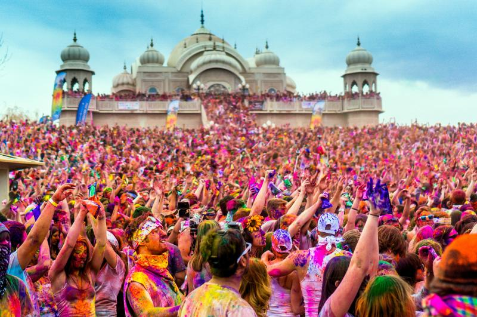

Aside from Sports and Programming, my other great passion is travel.
I love to travel because not only is it the ultimate adventure but
it also exposes you to new types of people, different ways of living,
and opens up your mind.
Travelling reminds me that my life isn't the only one I could
live and that in the grand scheme of things, I'm pretty unimportant
to this world we live in. People get so caught up in their daily
lives and forget that they can be somewhere or someone else tomorrow
if they'd like. There are no limits in the grand scheme of things
except the ones we create for ourselves. Travelling helps make sure
I don't forget that.
Below are some links to travel websites to get you started on your snow, sun and
cultural trips respectively. To begin your journey just click on an image below
